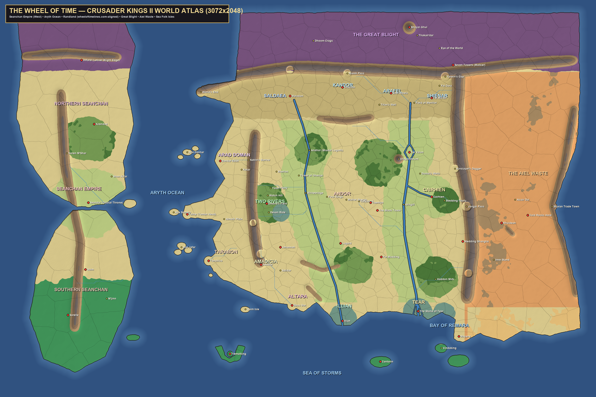
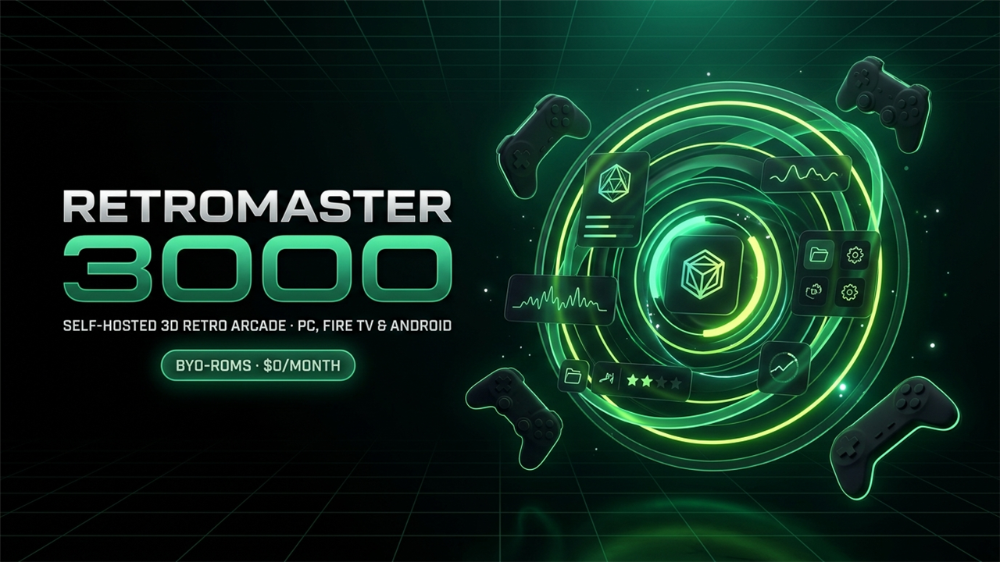

Scarward
Set in the world of The Hook and the Skein. Hold the Scar borderlands against Vrakoni and Hooked Ones as the Rust rises.
Play prototype →
Curated by His Grace the Duke of Errol a Dude of Greenthumb Abbey — where rough ideas, playable prototypes, Steam Workshop mods, books, and living-room tinkering live before anything graduates to the studio.
Set in the world of The Hook and the Skein. Hold the Scar borderlands against Vrakoni and Hooked Ones as the Rust rises.
Play prototype →An early garden-bed and planting-schedule notebook concept for tracking seed trays, raised beds, and crop notes.
Try concept slice →A kitchen and pantry inventory experiment built to see what dinner comes together from what is already on the shelf.
Try concept slice →Illustrated KDP coloring-book editions and upcoming original fiction projects currently taking shape on the Abbey workbench.
Trading card scanning and cataloging system with webcam OCR, barcode gun support, QR phone companion, and Collect / Sell / Trade tracking.
Highlander meets Project Zomboid. Awaken Immortality on First Death or pick from 6 Premade Highlanders, with multiplayer The Buzz radar, PvP beheading, and Holy Ground sanctuaries.
Steam Workshop #3838755002 →Grounded, zero-magic 4-phase apocalypse imagining the July 1993 Knox Event as the start of the Breaking of the World—escalating from normal 1993 Knox into sprinters, permanent shutoffs, and endless night.
Steam Workshop #3841679897 →Right-click sandbox utility and vehicle spawner/repair suite built for rapid mod testing and chaotic solo runs.
Steam Workshop #3838755214 →Core metaphysical framework bringing the One Power (Saidin & Saidar), Taint, Angreal, and canonical Randland 3D globe geography to RimWorld.
Steam Workshop #3841678752 →Adds the White Tower, Black Tower, Andor, Two Rivers, Aiel, Children of the Light, Ogier Stedding, and Seanchan Royalty Empire.
Steam Workshop #3841678913 →Standalone Shadowspawn threat mod unleashing 5 Trolloc tribes, Myrddraal, Draghkar, Darkhounds, Gray Men, and Gholam.
Steam Workshop #3841678962 →Custom WoT apparel, Heron-marked blades, White Tower & Stedding architecture, and colored One Power weave VFX.
Steam Workshop #3841679116 →Anachronistic scenario locking NPC factions into medieval Arthurian tech while your colony brings questionable modern bravado.
Built strictly on native CK2 3.3.5 primitives with a compiled 3072×2048 Randland map (19 navigable major rivers), playable non-dynastic orders (White Tower, Black Tower, Aiel Clan Holds, Sea Folk), 3-layer One Power & Saidin Taint, and multi-theater Tarmon Gai’don.

A zero-spend Progressive Web App for browsing, saving, and reading open-access books from Open Library—with an in-app BookReader, personal bookshelves, and 10-foot TV Mode (T).
Our living-room instance of the 2001-inspired 3D console dashboard and Fire TV / Android TV companion APK — 4-player Bluetooth controller bridge, Wayback archives, and cross-device Auto-Save.
